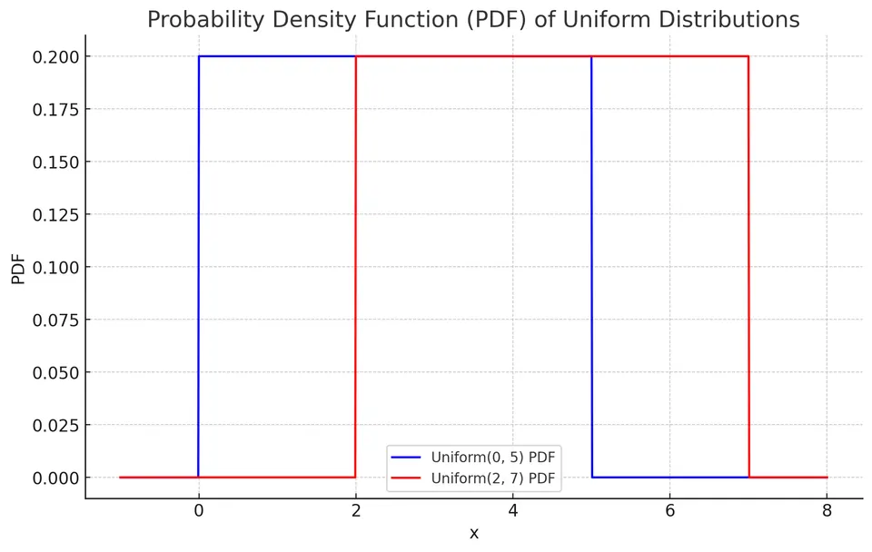
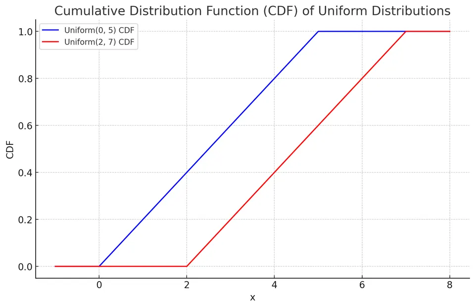

Uniform Distribution
A continuous uniform variable assigns equal probability to equal-length subintervals inside a fixed range. Write $X\sim\mathrm{Uniform}(a,b)$ with $a<b$. The density is constant on $[a,b]$, but no individual point has positive probability.
For example, under a uniform wait from 2 to 4 seconds, any half-second interval entirely within that range has probability $0.5/2=0.25$. Saying that every exact time is “equally likely” can obscure the fact that all those point probabilities are zero; interval lengths are what determine probabilities.
Density from total area
The density must have constant height over a width of $b-a$. To make its rectangular area equal 1, the height is $1/(b-a)$:
$$ f(x)= \begin{cases} 1/(b-a),&a\le x\le b,\\ 0,&\text{otherwise}. \end{cases} $$

For $a\le c<d\le b$, the probability is the rectangle's area $(d-c)/(b-a)$. An interval partly outside the support must first be intersected with $[a,b]$.
Cumulative distribution function
Below $a$ no probability has accumulated. Within the range, the accumulated width is $x-a$. Above $b$, all probability has accumulated:
$$ F(x)= \begin{cases} 0,&x<a,\\ (x-a)/(b-a),&a\le x\le b,\\ 1,&x>b. \end{cases} $$

The middle segment is linear because equal additional lengths add equal amounts of probability. This straight CDF is different from a constant density; the density is its slope on the interior.
Mean and variance
Symmetry places the mean at the midpoint:
$$ E[X]=\frac{a+b}{2}. $$
One derivation of the variance writes $X=a+(b-a)U$ with $U\sim\mathrm{Uniform}(0,1)$. For $U$, $E[U]=1/2$ and $E[U^2]=1/3$, so $\mathrm{Var}(U)=1/12$. Shifting by $a$ changes no variance, and scaling by $b-a$ squares that factor:
$$ \mathrm{Var}(X)=\frac{(b-a)^2}{12}. $$
Thus doubling the interval width doubles the standard deviation and multiplies the variance by four.
Moment-generating function and raw moments
Integrating $e^{tx}$ against the constant density gives, for $t\ne0$,
$$ M_X(t)=E[e^{tX}]=\frac{e^{tb}-e^{ta}}{t(b-a)}. $$
At $t=0$, the displayed quotient has a removable singularity; the MGF itself equals $E[1]=1$. Its limiting value is also 1. Because $X$ is bounded, the MGF is finite for every real $t$.
The derivative identity is
$$ E[X^n]=\frac{d^nM_X(t)}{dt^n}\Bigg|_{t=0}. $$
Direct integration gives the same moments. In particular,
$$ E[X]=\frac{a+b}{2},\qquad E[X^2]=\frac{a^2+ab+b^2}{3}. $$
Subtracting the squared mean simplifies to $(b-a)^2/12$. This also shows why the second raw moment depends on the interval's location, whereas the variance depends only on its width.
Example: event timing in a simulation game
A developer wants an event to occur uniformly between 2 and 4 seconds after an action. Set $a=2$ and $b=4$ seconds. The interval is two seconds wide, so the density is $1/2$ per second.
Event before 2.5 seconds
Only the first half-second of the allowed interval qualifies:
$$ P(X<2.5)=\frac{2.5-2}{4-2}=0.25. $$
The result is 25%, not a density height of 0.5. Integrating a height of $0.5$ per second across $0.5$ seconds produces the dimensionless probability 0.25.
Expected time and variance
$$ E[X]=\frac{2+4}{2}=3\text{ seconds}, $$
$$ \mathrm{Var}(X)=\frac{(4-2)^2}{12}=\frac13\text{ seconds}^2. $$
The standard deviation is $1/\sqrt3\approx0.577$ seconds. The mean describes the average event time over repeated independent simulations, while the variance describes the spread of those times.
Applications
Uniform models are useful for deliberate randomization and simulation over a bounded interval. A standard uniform draw $U$ can be transformed to $a+(b-a)U$. A discrete uniform distribution is different: it assigns positive masses to a finite set of equally likely values. Knowing only lower and upper bounds does not, by itself, establish that an observed continuous quantity is uniformly distributed.
Practice: Exercises with worked solutions